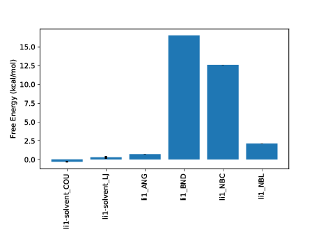

It is often advantageous to be able to look in more detail at the behaviour of an individual free energy calculation. This can sometimes provide additional insight into the mechanisms driving a free energy difference however it is more frequently useful for debugging.
A unique property of Thermodynamic Integration (TI) as a free energy difference estimator is that it can be split into component terms based on different system energy components. The script calc_ti_decomposed.py is focussed on this type of analysis.
Let's consider a set of single topology calculations for XXX. The script can be run as:
python $PROTOMSHOME/tools/calc_ti_decomposed.py -d out?_comb_free
All free energy quantities are given in kcal/mol
FDTI: -13.400 +- 0.000
kvk_ANG: 0.000 +- 0.000
kvk_BND: 1.400 +- 0.000
kvk_DIH: 0.000 +- 0.000
kvk_NBC: 0.200 +- 0.000
kvk_NBL: -14.950 +- 0.000
sum of terms: -13.350 +- 0.000

The first calculated output is labelled FDTI. This stands for Finite Difference Thermodynamic Integration and is the standard form of TI used by ProtoMS. This result should be the same as using the TI estimator with calc_dg.py. It is provided simply as a sanity check for the decomposed calculations beneath it and should be very similar to the sum of terms displayed last.
A good number of decomposed terms are displayed. These correspond to components of the system energy that are scaled by lambda and hence contribute to the free energy difference. Not all system energy terms are present; the list has been filtered for non-zero contributions. A graph summarising the results is also plotted. You can additionally see how the free energy for each term varies with lambda using the --pmf flag:
python $PROTOMSHOME/tools/calc_ti_decomposed.py -d out?_comb_free --pmf
IMAGE
We can see at a glance that intramolecular Lennard-Jones interactions are driving the majority of the free energy difference. These are typical in a single topology calculation and arise primarily from charges and LJ potentials being grown into the system and interacting with other nearby atoms in the solute.
Whilst we've gained some understanding of the free energy change in solvent this is of limited value due to some of the artificial contributions. We can include the gas phase of the calculation within the analysis to gain direct insight into the relative hydration free energy difference.
python $PROTOMSHOME/tools/calc_ti_decomposed.py -d out?_comb_free -g out?_comb_gas
The majority of the intramolecular terms have from the solvent and gas phase have cancelled with one another leaving only those that contribute to the relative free energy difference. As with calc_dg.py you can provide multiple instances of the -d and -g flags to combine multiple legs of an individual calculation. All of the data from a two-step (electrostatics then van der Waals calculation) single topology calculation can easily be analysed with.
python $PROTOMSHOME/tools/calc_ti_decomposed.py -d out?_ele_free -d out?_vdw_free -g out?_ele_gas -g out?_vdw_gas
python $PROTOMSHOME/tools/calc_ti_decomposed.py -d out?_comb_free
You'll that notice, unlike the single topology data, there are no intramolecular terms. Instead large contributions of opposite sign come from the interaction of each solute with the surrounding system. This is because with dual topology an entire ligand is decoupled from the system whilst another is coupled in. A handy option here is the --dual flag to the script, which attempts to combine these large terms together leaving only the net effect, that is a lot easier to understand.
python $PROTOMSHOME/tools/calc_ti_decomposed.py -d out?_comb_free --dual